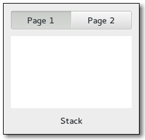

Gtk.Stack
Example
Methods
| Inherited: | Gtk.Container (27), Gtk.Widget (256), GObject.Object (33), Gtk.Buildable (10) |
|---|
| static | new() |
| add_named(child, name) | |
| add_titled(child, name, title) | |
| get_child_by_name(name) | |
| get_homogeneous() | |
| get_transition_duration() | |
| get_transition_running() | |
| get_transition_type() | |
| get_visible_child() | |
| get_visible_child_name() | |
| set_homogeneous(homogeneous) | |
| set_transition_duration(duration) | |
| set_transition_type(transition) | |
| set_visible_child(child) | |
| set_visible_child_full(name, transition) | |
| set_visible_child_name(name) |
Virtual Methods
| Inherited: | Gtk.Container (10), Gtk.Widget (82), GObject.Object (7), Gtk.Buildable (10) |
|---|
Properties
| Inherited: | Gtk.Container (3), Gtk.Widget (38) |
|---|
| Name | Type | Flags | Short Description |
|---|---|---|---|
| homogeneous | bool | r/w/c | Homogeneous sizing |
| transition-duration | int | r/w/c | The animation duration, in milliseconds |
| transition-running | bool | r | Whether or not the transition is currently running |
| transition-type | Gtk.StackTransitionType | r/w/c | The type of animation used to transition |
| visible-child | Gtk.Widget | r/w | The widget currently visible in the stack |
| visible-child-name | str | r/w | The name of the widget currently visible in the stack |
Child Properties
| Name | Type | Default | Flags | Short Description |
|---|---|---|---|---|
| icon-name | str | None | r/w | The icon name of the child page |
| name | str | None | r/w | The name of the child page |
| needs-attention | bool | False | r/w | Whether this page needs attention |
| position | int | 0 | r/w | The index of the child in the parent |
| title | str | None | r/w | The title of the child page |
Style Properties
| Inherited: | Gtk.Widget (17) |
|---|
Signals
| Inherited: | Gtk.Container (4), Gtk.Widget (69), GObject.Object (1) |
|---|
Fields
| Inherited: | Gtk.Container (1), Gtk.Widget (1), GObject.InitiallyUnowned (3), GObject.Object (3) |
|---|
| Name | Type | Access | Description |
|---|---|---|---|
| parent_instance | Gtk.Container | r |
Class Details
- class Gtk.Stack(**kwargs)
Bases: Gtk.Container
The Gtk.Stack widget is a container which only shows one of its children at a time. In contrast to Gtk.Notebook, Gtk.Stack does not provide a means for users to change the visible child. Instead, the Gtk.StackSwitcher widget can be used with Gtk.Stack to provide this functionality.
Transitions between pages can be animated as slides or fades. This can be controlled with Gtk.Stack.set_transition_type (). These animations respect the Gtk.Settings :gtk-enable-animations setting.
The Gtk.Stack widget was added in GTK+ 3.10.
- static new()
Returns: a new Gtk.Stack Return type: Gtk.Widget Creates a new Gtk.Stack container.
New in version 3.10.
- add_named(child, name)
Parameters: - child (Gtk.Widget) – the widget to add
- name (str) – the name for child
Adds a child to stack. The child is identified by the name.
New in version 3.10.
- add_titled(child, name, title)
Parameters: - child (Gtk.Widget) – the widget to add
- name (str) – the name for child
- title (str) – a human-readable title for child
Adds a child to stack. The child is identified by the name. The title will be used by Gtk.StackSwitcher to represent child in a tab bar, so it should be short.
New in version 3.10.
- get_child_by_name(name)
Parameters: name (str) – the name of the child to find Returns: the requested child of the Gtk.Stack Return type: Gtk.Widget Finds the child of the Gtk.Stack with the name given as the argument. Returns None if there is no child with this name.
New in version 3.12.
- get_homogeneous()
Returns: whether stack is homogeneous. Return type: bool Gets whether stack is homogeneous. See Gtk.Stack.set_homogeneous ().
New in version 3.10.
- get_transition_duration()
Returns: the transition duration Return type: int Returns the amount of time (in milliseconds) that transitions between pages in stack will take.
New in version 3.10.
- get_transition_running()
Returns: True if the transition is currently running, False otherwise. Return type: bool Returns whether the stack is currently in a transition from one page to another.
New in version 3.12.
- get_transition_type()
Returns: the current transition type of stack Return type: Gtk.StackTransitionType Gets the type of animation that will be used for transitions between pages in stack.
New in version 3.10.
- get_visible_child()
Returns: the visible child of the Gtk.Stack Return type: Gtk.Widget Gets the currently visible child of stack, or None if there are no visible children.
New in version 3.10.
- get_visible_child_name()
Returns: the name of the visible child of the Gtk.Stack Return type: str Returns the name of the currently visible child of stack, or None if there is no visible child.
New in version 3.10.
- set_homogeneous(homogeneous)
Parameters: homogeneous (bool) – True to make stack homogeneous Sets the Gtk.Stack to be homogeneous or not. If it is homogeneous, the Gtk.Stack will request the same size for all its children. If it isn’t, the stack may change size when a different child becomes visible.
New in version 3.10.
- set_transition_duration(duration)
Parameters: duration (int) – the new duration, in milliseconds Sets the duration that transitions between pages in stack will take.
New in version 3.10.
- set_transition_type(transition)
Parameters: transition (Gtk.StackTransitionType) – the new transition type Sets the type of animation that will be used for transitions between pages in stack. Available types include various kinds of fades and slides.
The transition type can be changed without problems at runtime, so it is possible to change the animation based on the page that is about to become current.
New in version 3.10.
- set_visible_child(child)
Parameters: child (Gtk.Widget) – a child of stack Makes child the visible child of stack.
If child is different from the currently visible child, the transition between the two will be animated with the current transition type of stack.
Note that the child widget has to be visible itself (see Gtk.Widget.show ()) in order to become the visible child of stack.
New in version 3.10.
- set_visible_child_full(name, transition)
Parameters: - name (str) – the name of the child to make visible
- transition (Gtk.StackTransitionType) – the transition type to use
Makes the child with the given name visible.
Note that the child widget has to be visible itself (see Gtk.Widget.show ()) in order to become the visible child of stack.
New in version 3.10.
- set_visible_child_name(name)
Parameters: name (str) – the name of the child to make visible Makes the child with the given name visible.
If child is different from the currently visible child, the transition between the two will be animated with the current transition type of stack.
Note that the child widget has to be visible itself (see Gtk.Widget.show ()) in order to become the visible child of stack.
New in version 3.10.
Property Details
- Gtk.Stack.props.homogeneous
Name: homogeneous Type: bool Default Value: True Flags: r/w/c Homogeneous sizing
- Gtk.Stack.props.transition_duration
Name: transition-duration Type: int Default Value: 200 Flags: r/w/c The animation duration, in milliseconds
- Gtk.Stack.props.transition_running
Name: transition-running Type: bool Default Value: False Flags: r Whether or not the transition is currently running
- Gtk.Stack.props.transition_type
Name: transition-type Type: Gtk.StackTransitionType Default Value: Gtk.StackTransitionType.NONE Flags: r/w/c The type of animation used to transition
- Gtk.Stack.props.visible_child
Name: visible-child Type: Gtk.Widget Default Value: None Flags: r/w The widget currently visible in the stack